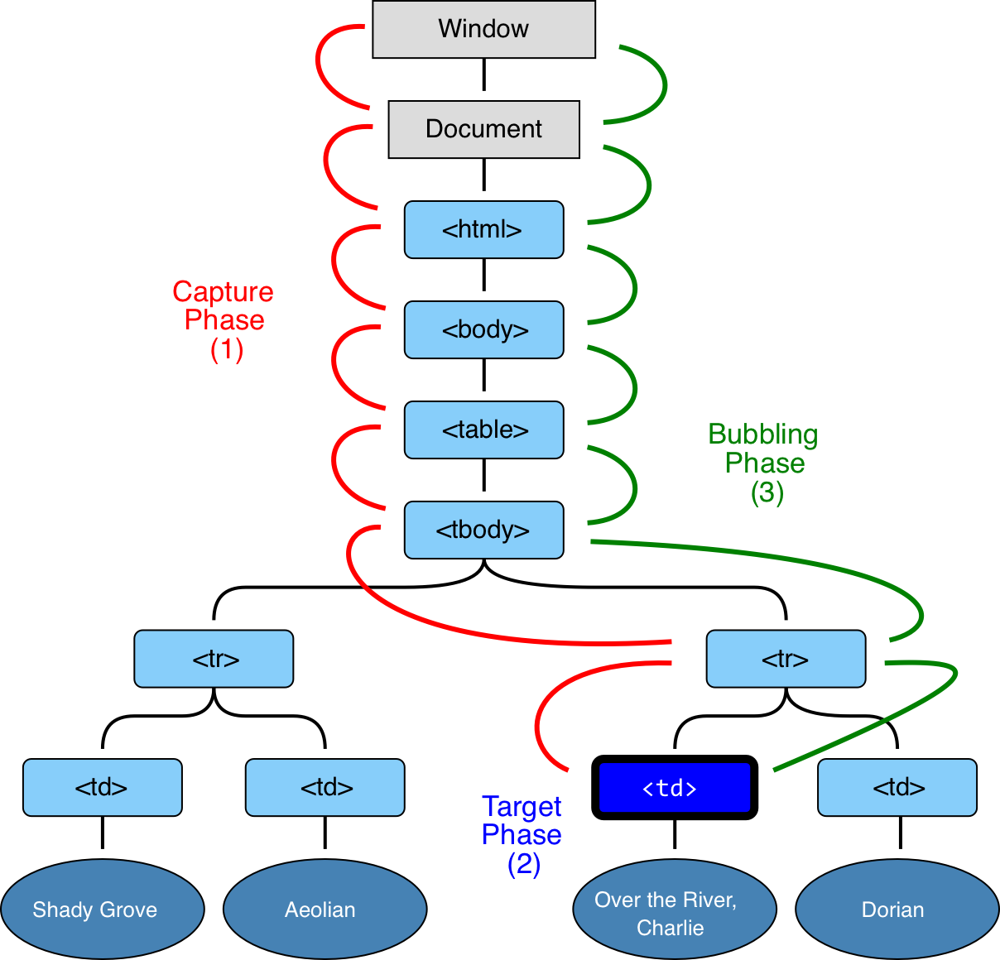

鼠标点击和触摸屏点击
捕获 capture 冒泡 bubble
捕获是计算机处理输入的逻辑，冒泡是人类理解事件的思维，捕获总是在冒泡之前发生。
事件处理，默认使用冒泡方式。冒泡方式，上层的 div 先触发回调
DOM Events 处理有3个阶段：
- Capture pahse the event goes down to the element
- Target Phase the event reached the target element
- Bubbling Phase the event bubbles up from the element

Event 属性：
- event.target 最深处的 element
- event.currentTarget 处理 event 的当前 element
- event.eventPhase (capturing=1, target=2, bubbling=3)
<body >
<input id="i"/>
</body>
/*
addEventListener(event, function, useCapture)
event: click mousedown
useCapture: 默认 false true 事件在捕获阶段执行； false 事件在冒泡阶段执行
*/
window.addEventListener('mousedown', () => {
console.log('window1')
}, true)
document.addEventListener('mousedown', () => {
console.log('document1')
}, true)
document.body.addEventListener('mousedown', () => {
console.log('key1')
}, true)
document.getElementById('i').addEventListener('mousedown', () => {
console.log('key2')
}, true)
window.addEventListener('mousedown', () => {
console.log('window11')
}, false)
document.addEventListener('mousedown', () => {
console.log('document11')
}, false)
document.body.addEventListener('mousedown', function (event) {
console.log('key11')
console.log(event.eventPhase)
console.log(event.target)
console.log(event.currentTarget)
}, false)
document.getElementById('i').addEventListener('mousedown', function () {
console.log('key22')
}, false)
// 输出结果为
// 捕获：window1 document1 key1 key2
// 冒泡：key22 key11 document11 window11
停止 冒泡
event.stopPropagation()
特例
focus 事件不会冒泡
焦点
键盘事件时有焦点系统控制的。
在整个 UI 系统中，有且仅有一个“聚焦”的元素。只有一个 FirstResponder
// 获取焦点
document.getElementById('i').focus()
// 失去焦点
document.getElementById('i').blur()
iOS 中处理
WKWebView 默认不制止 代码设置焦点，弹出键盘 需要修改下 WKWebView 内部实现
_wkWebView.keyboardDisplayRequiresUserAction = NO;
import Foundation
import WebKit
typealias OldClosureType = @convention(c) (Any, Selector, UnsafeRawPointer, Bool, Bool, Any?) -> Void
typealias NewClosureType = @convention(c) (Any, Selector, UnsafeRawPointer, Bool, Bool, Bool, Any?) -> Void
/// 支持：设置自动获取焦点后，弹出键盘
extension WKWebView{
@objc var keyboardDisplayRequiresUserAction: Bool {
get {
return self.keyboardDisplayRequiresUserAction ?? true
}
set {
self.setKeyboardRequiresUserInteraction(newValue ?? true)
}
}
func setKeyboardRequiresUserInteraction( _ value: Bool) {
guard let WKContentView: AnyClass = NSClassFromString("WKContentView") else {
print("keyboardDisplayRequiresUserAction extension: Cannot find the WKContentView class")
return
}
// For iOS 10, *
let sel_10: Selector = sel_getUid("_startAssistingNode:userIsInteracting:blurPreviousNode:userObject:")
// For iOS 11.3, *
let sel_11_3: Selector = sel_getUid("_startAssistingNode:userIsInteracting:blurPreviousNode:changingActivityState:userObject:")
// For iOS 12.2, *
let sel_12_2: Selector = sel_getUid("_elementDidFocus:userIsInteracting:blurPreviousNode:changingActivityState:userObject:")
if let method = class_getInstanceMethod(WKContentView, sel_10) {
let originalImp: IMP = method_getImplementation(method)
let original: OldClosureType = unsafeBitCast(originalImp, to: OldClosureType.self)
let block : @convention(block) (Any, UnsafeRawPointer, Bool, Bool, Any?) -> Void = { (me, arg0, arg1, arg2, arg3) in
original(me, sel_10, arg0, !value, arg2, arg3)
}
let imp: IMP = imp_implementationWithBlock(block)
method_setImplementation(method, imp)
}
if let method = class_getInstanceMethod(WKContentView, sel_11_3) {
let originalImp: IMP = method_getImplementation(method)
let original: NewClosureType = unsafeBitCast(originalImp, to: NewClosureType.self)
let block : @convention(block) (Any, UnsafeRawPointer, Bool, Bool, Bool, Any?) -> Void = { (me, arg0, arg1, arg2, arg3, arg4) in
original(me, sel_11_3, arg0, !value, arg2, arg3, arg4)
}
let imp: IMP = imp_implementationWithBlock(block)
method_setImplementation(method, imp)
}
if let method = class_getInstanceMethod(WKContentView, sel_12_2) {
let originalImp: IMP = method_getImplementation(method)
let original: NewClosureType = unsafeBitCast(originalImp, to: NewClosureType.self)
let block : @convention(block) (Any, UnsafeRawPointer, Bool, Bool, Bool, Any?) -> Void = { (me, arg0, arg1, arg2, arg3, arg4) in
original(me, sel_12_2, arg0, !value, arg2, arg3, arg4)
}
let imp: IMP = imp_implementationWithBlock(block)
method_setImplementation(method, imp)
}
}
}